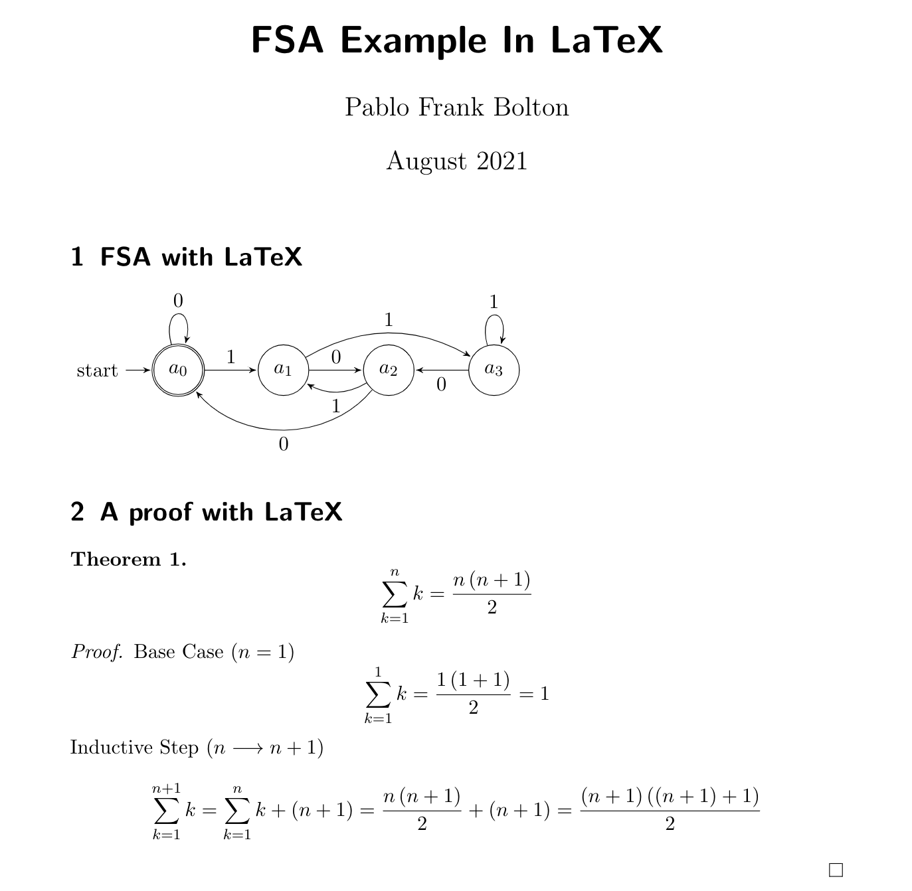

CSC 250
Theory of Computation
Smith Computer Science
Theory of Computation
Smith Computer Science
Name: Pablo Frank Bolton ("Frank" and "Bolton" are last names);
Pronouns: He, Him;
you can call me "Pablo"
What do I do?


Name: Winnie Zong
OHs: Sunday 1-3 pm and 7-9 pm; Monday 7-9 pm; All in Ford CS classroom (TBD)
Please fill out this small 3-minute-biography so I can get to know you a bit.
Activity 1 :[2 minutes] : Can anyone tell me what Computer Science is?
Computer Science is the structured study of, and the design of solutions for, problems that are solvable with an algorithm.
A series of steps that allow you to solve a problem.
(there is a bit more than that, but for now, that's enough)
Dijkstra was a Dutch Computer Scientist that was good (The Serena Williams of CS)."Computer Science is no more about computers than astronomy is about telescopes"
Sort of like seeing what can be buillt given a few types of Lego pieces.
We assume 50-50 chance of black vs red (ignore green)
What should happen:
Option 1: use a trusted 3rd Party (boring and often wrong)
Option 2: we need to have both parties save 1) the initial guess, and 2) the actual outcome,
and then reveal both simultaneously.
One possible answer below
|
Some processes are easy to do but hard to reverse:
|
|
So, How does this help with our phone roulette?
Imagine these steps:
Activity 2.3 :[2 minutes] : What cold go wrong? One possible answer: (Wait; then Click)
What if you choose two ways of getting a number: one that has a "7" in the factor and one that doesn't.
Activity 2.4 :[2 minutes] : How can we solve this?!!
Side Note: Now imagine factoring this number:
20,988,936,657,440,586,486,151,264,256,610,222,593,863,921 (which has only 44 digits... the largest known number of its kind has almost 25 million digits) |
Now, let's say we define the set of "simple rules" to be the following:
Given the following set of operations:

What kinds of problems can we solve?
This class has three main objectives:
The class information is located in the Class Info link of the navigation bar. We will go over it now. When we are done checking it out, make sure to continue here.
We will use Discord as our main communication hub.
Access Moodle here: https://moodle.smith.edu/
We'll keep links to each lecture in Moodle. In addition, we'll have any PDFs, readings, and other resources.
I'll update the course Moodle with the appropriate links and information as we move forward in the course.
Repl.it (AKA replit) is a free, collaborative, in-browser IDE. An IDE is an Integrated Development Environment, which is a fancy way of saying "a text editor that can also check and run your code".

IF we have programming assignments, replit is where we'll do them.
The important part is that we'll be able to exchange files and check your work through replit, making it easier to check your code for errors, grade your work, and distribute templates to get you started.
Overleaf is an online LaTeX editor.
What is LaTeX? you ask.
From https://www.latex-project.org/:
"LaTeX is a high-quality typesetting system; it includes features designed for the production of technical and scientific documentation. LaTeX is the de facto standard for the communication and publication of scientific documents."

I would be very happy to meet you during office hours.
This will help me get to know you and learn how best to communicate.
Office Hours are not for remedial or emergency meetings, its part of the academic experience!
In OHs, we can talk about the class work and organization, but also about aspirations, expectations, curiosities, and more.
I really like office hours, so please feel free to drop by.
You may take this opportunity to let me know if you have arranged any accommodations with ODS.
This course has been designed with the help of Jordan Crouser.
(Thanks, Jordan)